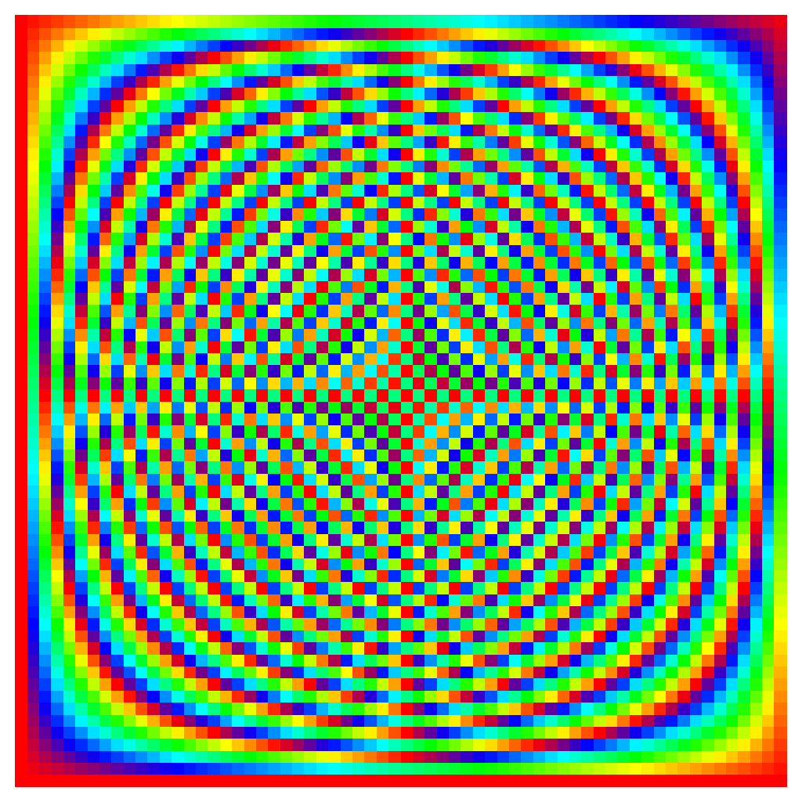

Fourier matrix
The DFT ( \(X_j = \sum_i x_i\cdot e^{2\pi\mathbf{i} ij/N}\)) can be put in matrix form using the Fourier matrix \(F\):
Here, we display the phase of this matrix (the magnitude being constant).
Figure plot_mat_fourier(entier N)
{
Tabf phase(N,N);
pour( auto i = 0; i < N; i++)
pour( auto j = 0; j < N; j++)
phase(i,j) = modulo_2π(-(2*π*i*j)/N);
Figure f;
f.axes().set_isoview(oui);
f.axes().supprime_decorations();
// Carte de couleur HSV, car périodique f.plot_img(phase, "hsv" );
retourne f;
}

N = 64
Each output value \(X_i\) of the DFT can be interpreted as the dot product of the input signal with the line number i of the Fourier matrix:
The low-frequency terms (positives) are her eat the bottom (note the lowest line, of constant phase, which correspond to \(X_0\)). Then, the higher we go, the higher is the frequency, at least up to the middle, that is for the \(X_{N/2}\) term, after which we continue on the negative frequencies).